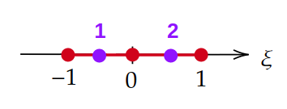

pysdic.get_segment_3_gauss_points#
- get_segment_3_gauss_points(return_weights=False)[source]#
Get the natural coordinates \(\xi\) and weights of Gauss quadrature points for a 3-node segment element.
- Parameters:
return_weights (
bool, optional) – IfTrue, the function will also return the weights associated with each Gauss point. Default isFalse.- Returns:
gauss_points (
numpy.ndarray) – Natural coordinates of the Gauss points. The returned array has shape (2, 1).weights (
numpy.ndarray, optional) – Ifreturn_weightsisTrue, the function also returns an array of weights with shape (2,) associated with each Gauss point.
- Return type:
Notes
A 3-node segment element uses the following Gauss points and weights for numerical integration:
Point No.
\((\xi)\)
Weight \(w\)
1
\(-\frac{1}{\sqrt{3}}\)
\(1\)
2
\(\frac{1}{\sqrt{3}}\)
\(1\)

See also
pysdic.compute_segment_3_shape_functionsShape functions for 3-node segment 1D-elements.
Examples
Get the Gauss points for a 3-node segment element:
1import numpy 2from pysdic import get_segment_3_gauss_points 3 4gauss_points = get_segment_3_gauss_points() 5print("Gauss points:") 6print(gauss_points)
Gauss points: [[-0.57735027] [ 0.57735027]]
{kind=link}